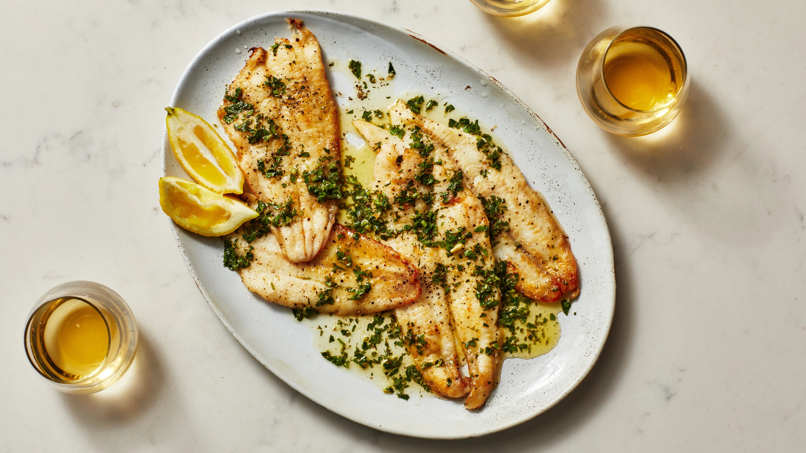
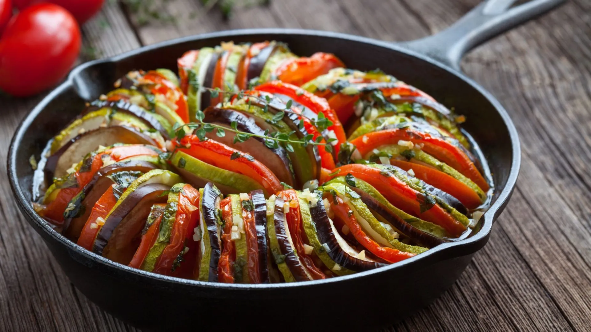
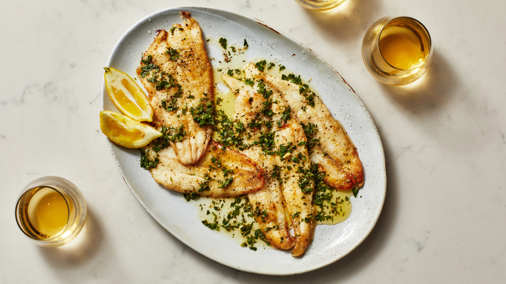
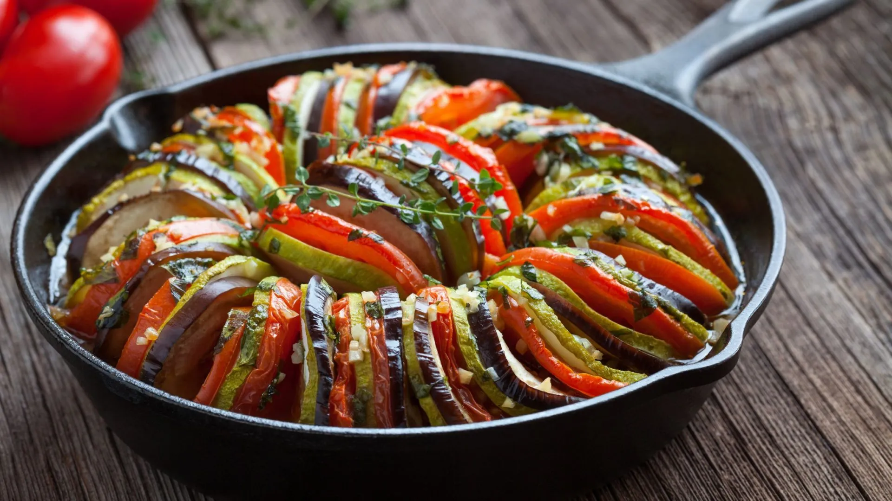

No Gusteau's French Cousine, trazemos a essência da culinária francesa para
São Caetano do Sul,
com pratos que celebram tradições e sabores autênticos. Cada receita é cuidadosamente preparada,
unindo técnicas clássicas e ingredientes frescos, para oferecer uma experiência gastronômica
única.
Do refinado coq au vin ao delicado crème brûlée, nosso menu é uma homenagem à sofisticação e ao
charme da França. Para completar a experiência, contamos com uma carta de bebidas selecionadas para
harmonizar perfeitamente com nossos pratos.
Nosso ambiente acolhedor e elegante, aliado a um atendimento atencioso, é o cenário ideal para
jantares românticos, encontros entre amigos ou ocasiões especiais.
Descubra a França em cada detalhe e permita-se viver uma experiência inesquecível.

 



Gusteau's nasceu do desejo de trazer a rica tradição da culinária
francesa para São Paulo. Inspirados pelas ruas charmosas de Paris e pelos sabores únicos de cada região
da
França, criamos um espaço onde a gastronomia clássica encontra um toque de modernidade.
Nossa jornada começou com uma paixão por técnicas refinadas e ingredientes frescos. Cada prato no menu é
uma homenagem às receitas francesas, como o autêntico ratatouille, o saboroso boeuf bourguignon e o
delicado crème brûlée, cuidadosamente preparados para proporcionar uma experiência inesquecível.
Ao longo dos anos, nos tornamos um refúgio para amantes da boa comida, do vinho e da arte de viver à
moda francesa. Nossa carta de vinhos celebra as melhores safras de Bordeaux, Bourgogne e outras regiões
icônicas, criando harmonizações perfeitas para cada momento.
O Gusteau's é mais do que um lugar para refeições: é onde histórias são contadas,
celebrações acontecem e a essência da França ganha vida. Cada visita é um convite para saborear a
tradição e o charme da cultura francesa.
Venha fazer parte da nossa história e permita-se viver a França em cada detalhe.
Telefone: 1234-5678
Email: gusteausfrench@cousine.com
Endereço:Rua Santo André, 680 - Boa Vista - São Caetano do Sul/SP.